Project notes
Stable Diffusion: Clearly Explained
A step-by-step lecture walkthrough of how Stable Diffusion works, covering generative modeling, forward and reverse diffusion, Variational Autoencoders, CLIP text conditioning, cross-attention in U-Net, and PyTorch implementation.
In this project, we walk through the complete architecture, mathematics, and PyTorch implementation of Stable Diffusion (originally introduced as the Latent Diffusion Model by Rombach et al., CVPR 2022). Following a structured lecture progression, we start from the intuition behind generative and diffusion models, derive Variational Autoencoders and the Evidence Lower Bound (ELBO), unpack every component of Stable Diffusion, and finish with practical code using Hugging Face diffusers and PyTorch.
1. Objective and History of Generative AI in Vision
Generative AI in computer vision has evolved rapidly over the past decade. Early milestones such as GANs (2014), DCGAN, Pix2Pix, BigGAN, StyleGAN2, and VQ-VAE-2 demonstrated that neural networks could synthesize realistic images. Starting around 2021 to 2024, diffusion-based and transformer-based models unlocked high-resolution, text-guided generation across both images (DALL-E 2, DALL-E 3, Imagen, Midjourney, Stable Diffusion) and video (Video LDM, Stable Video Diffusion, Sora).
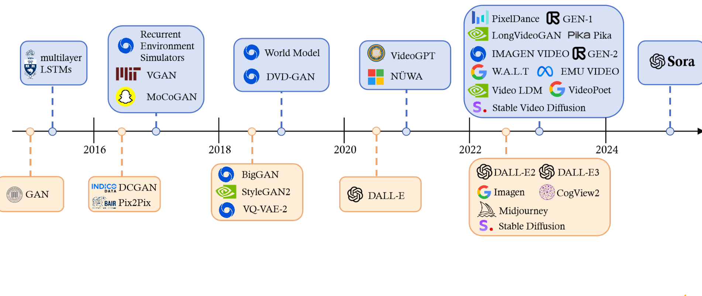
By the end of these notes, we will cover six core topics:
- The fundamental principles of diffusion models (forward noise addition and reverse denoising).
- Modeling the noise / score prediction of images with a U-Net backbone.
- Understanding text prompts through contextualized CLIP embeddings.
- Injecting text conditioning into image generation through cross-attention.
- Improving computational efficiency by moving diffusion into a compressed VAE latent space.
- Running and implementing Latent Diffusion components in PyTorch and
diffusers.
2. Introduction to Stable Diffusion
2.1 What is a Generative Model?
A discriminative model learns decision boundaries between classes (for example, predicting whether an image contains a cat or a dog). By contrast, a generative model learns the underlying probability distribution of a dataset so that we can sample from that distribution to synthesize brand-new instances of data.
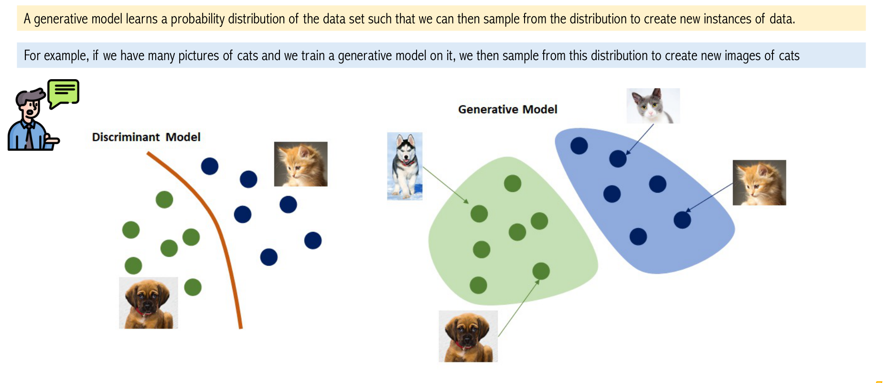
Crucially, generating realistic samples requires capturing the joint distribution of variables rather than independent marginals. For instance, if you want to generate realistic synthetic profiles described by $(\text{Age}, \text{Height})$, sampling age from $\mathcal{N}(40, 30^2)$ and height independently from $\mathcal{N}(120, 100^2)$ can produce impossible combinations (such as a 2-year-old who is 180 cm tall). A generative model must learn how features co-vary together.
2.2 What is a Diffusion Model?
Diffusion models (Ho et al., DDPM 2020) are latent variable generative models composed of two symmetric Markov chains over timesteps $t = 1, \dots, T$:
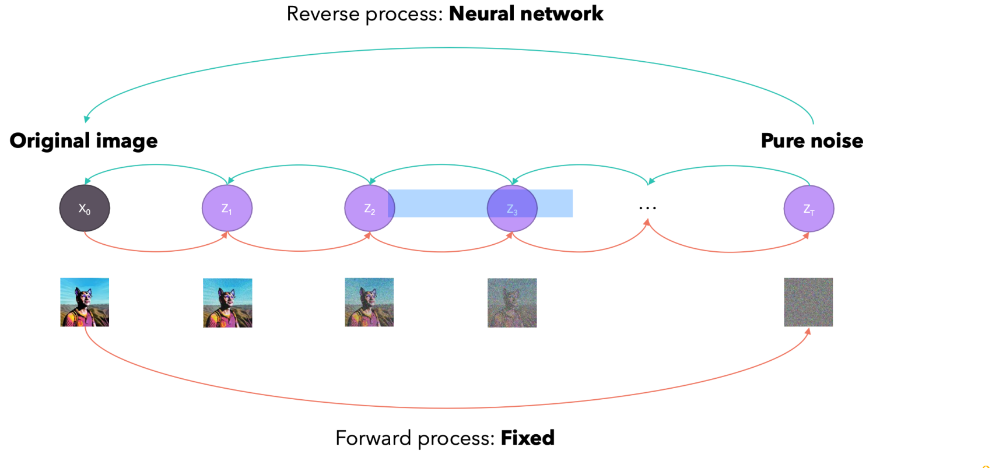
- Forward process (fixed): Gradually adds small amounts of Gaussian noise to an original image $x_0$ according to a variance schedule $\beta_1, \dots, \beta_T$ until $x_T$ becomes pure isotropic Gaussian noise:
A convenient property of this Gaussian Markov chain is that we can jump directly to any arbitrary timestep $t$ in closed form. Defining $\alpha_t = 1 - \beta_t$ and $\bar{\alpha}_t = \prod_{s=1}^{t} \alpha_s$, we obtain:
- Reverse process (learned neural network): Starts from pure Gaussian noise $p(x_T) = \mathcal{N}(x_T; \mathbf{0}, \mathbf{I})$ and iteratively denoises step by step using learned Gaussian transitions $p_\theta(x_{t-1} \mid x_t)$:
2.3 Forward Process and Reverse Process
An intuitive physical analogy for the forward diffusion process is dropping a bit of blue ink into a glass of water. Over time, the ink particles diffuse randomly until the water turns uniform and you can no longer tell where the droplet originally landed. Similarly, forward diffusion prepares training samples by adding controlled amounts of random Gaussian noise to clean images.
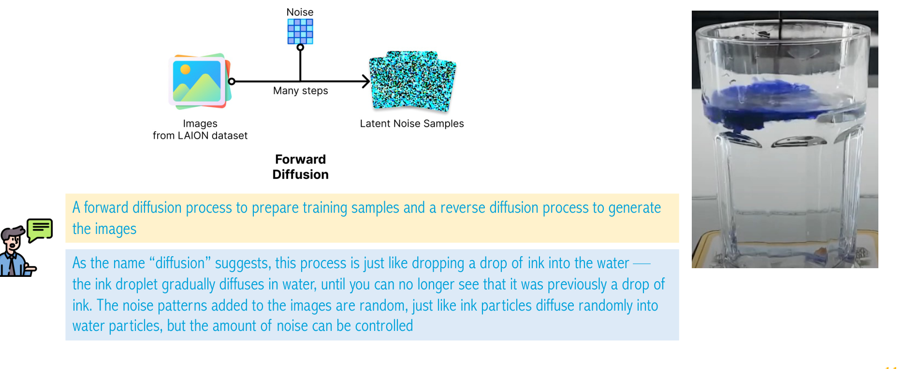
In the reverse diffusion process, a U-Net Noise Predictor takes a noisy tensor and learns to predict the noise that was added, subtracting it step by step to recover a sharper image. By also feeding text embeddings into this denoising loop (a process called conditioning), we steer the reverse trajectory toward a specific prompt.
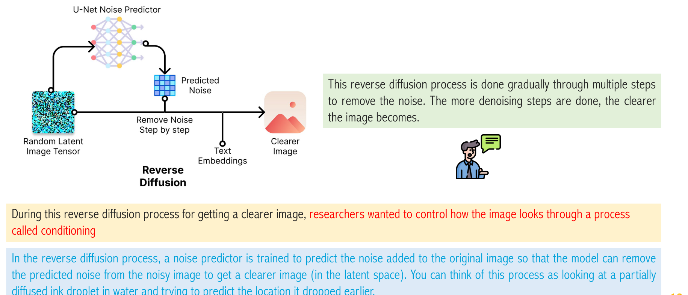
Introduced in 2022 by the CompVis Group at LMU Munich and Stability AI, Stable Diffusion turns this text-to-image diffusion framework into a fast, practical model capable of high-resolution image synthesis on consumer GPUs.
3. Stable Diffusion: Motivation
3.1 From Pixel Space to Latent Space
Standard diffusion models operate directly in pixel space, meaning the latent variable $x_t$ has the exact same dimensionality as the full RGB image. Running a heavy U-Net for $T$ denoising steps on high-resolution pixel tensors (such as $512 \times 512 \times 3$) is prohibitively slow and memory-intensive during both training and sampling.
The key breakthrough of Latent Diffusion Models (LDM) / Stable Diffusion is perceptual compression: instead of learning the distribution $p(x)$ directly in pixel space, we use a pretrained Variational Autoencoder (VAE) with an Encoder $E$ and Decoder $D$ to compress each $512 \times 512 \times 3$ image into a much smaller $64 \times 64 \times 4$ latent representation $z_0 = E(x_0)$. All forward and reverse diffusion steps take place inside this compact latent space, and the Decoder reconstructs the final image $x'_0 = D(z_0)$ only once at the very end.
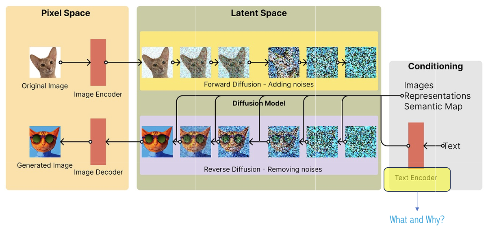
3.2 Text Encoder and CLIP
Neural networks cannot understand raw text prompts directly. Just as you need a translator to communicate with an artist who speaks a different language, Stable Diffusion uses a pretrained Text Encoder to convert a text prompt into dense numerical vectors that capture semantic meaning and word relationships.
Specifically, Stable Diffusion v1 uses CLIP (Contrastive Language-Image Pre-training) by OpenAI (while v2 uses OpenCLIP). CLIP aligns images and captions in a shared embedding space, enabling the text encoder to transform an input prompt into a fixed-size sequence of $77$ token embeddings, each with $768$ dimensions.
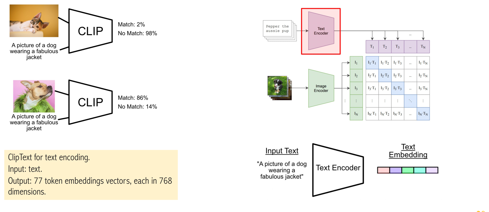
3.3 From Autoencoders to Variational Autoencoders (VAE)
Why does Stable Diffusion rely on a Variational Autoencoder (VAE) rather than a plain Autoencoder to build its latent space?
A standard Autoencoder compresses an input image $x$ into a deterministic code $z$ and reconstructs $x'$, much like a file compression tool (ZIP and UNZIP). However, the learned code $z$ has no guaranteed global structure: the encoder can assign arbitrary vectors to inputs without organizing similar images smoothly in space. If we sample a random vector from that space and pass it to the decoder, the output is usually meaningless gibberish.
A Variational Autoencoder (VAE) solves this by learning a continuous latent probability distribution (parameterized by mean $\mu$ and variance $\sigma^2$) instead of isolated deterministic points. Just as we can sample random numbers from a known distribution in Python, we can smoothly sample latent vectors $z$ from the VAE latent space and decode them into coherent images.
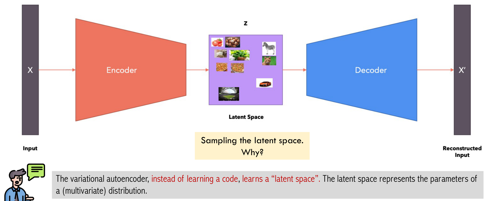
Why is it called a latent (hidden) space? Think of Plato’s allegory of the cave: the raw pixels we observe ($X$) are like shadows cast on the cave wall, while the latent variable ($Z$) represents the underlying hidden factors (shape, color, lighting, pose) that generate those observations.
3.4 Mathematical Foundations: KL Divergence and ELBO
To derive how a VAE is trained, we need four foundational probability tools:
- Expectation: $\mathbb{E}_{x}[f(x)] = \int f(x)p(x)\,dx$
- Chain rule of probability: $p(x, z) = p(x \mid z)\,p(z)$
- Bayes’ Theorem: $p(z \mid x) = \dfrac{p(x \mid z)\,p(z)}{p(x)}$
- Kullback-Leibler (KL) Divergence: Measures how far one probability distribution $P$ diverges from another distribution $Q$. It is asymmetric, always non-negative ($D_{KL}(P \| Q) \ge 0$), and equals $0$ if and only if $P = Q$:
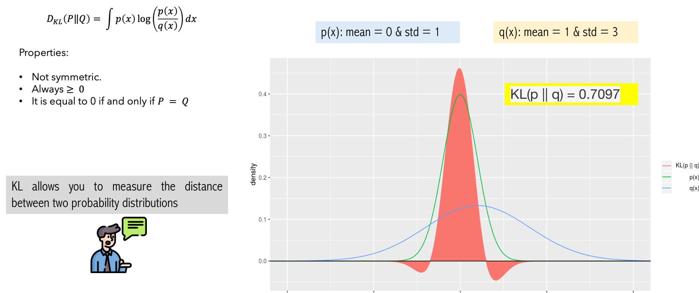
Now consider the likelihood of our observed data $p_\theta(x)$. Marginalizing over all possible latent states $z$ gives:
This integral is intractable because integrating over every configuration of high-dimensional latent space $Z$ is computationally impossible. Using the chain rule gives $p_\theta(x) = p_\theta(x, z) / p_\theta(z \mid x)$, which creates a chicken-and-egg problem: computing $p_\theta(x)$ requires the true posterior $p_\theta(z \mid x)$, yet computing $p_\theta(z \mid x)$ via Bayes’ theorem requires $p_\theta(x)$.
The variational inference solution is to introduce a tractable approximate posterior $q_\phi(z \mid x)$ (implemented by our Encoder network with parameters $\phi$) to approximate the intractable true posterior $p_\theta(z \mid x) \approx q_\phi(z \mid x)$. Starting from $\log p_\theta(x)$ and multiplying by $\int q_\phi(z \mid x)\,dz = 1$, we derive the Evidence Lower Bound (ELBO) step by step:
Because KL divergence is always non-negative, the first term is a guaranteed lower bound on $\log p_\theta(x)$ (just as Total Compensation = Base Salary + Bonus $\ge$ Base Salary when Bonus $\ge 0$). Expanding $p_\theta(x, z) = p_\theta(x \mid z)\,p_\theta(z)$ splits the ELBO into two interpretable terms:
Maximizing the ELBO therefore achieves two goals simultaneously:
- Maximizing the first term: Encourages the decoder $p_\theta(x \mid z)$ to accurately reconstruct the original image $x$ from its latent code $z$.
- Minimizing the second term: Keeps the learned encoder distribution $q_\phi(z \mid x)$ close to the prior belief $p_\theta(z) = \mathcal{N}(0, \mathbf{I})$, ensuring the latent space remains smooth and well-structured.
3.5 The Reparameterization Trick and VAE Architecture
To optimize $\mathcal{L}(\theta, \phi; x)$ with stochastic gradient descent, we need gradients with respect to both $\theta$ and $\phi$. However, sampling $z \sim q_\phi(z \mid x)$ introduces a stochastic node right in the middle of the computation graph. Naive score-function estimators suffer from extremely high variance, and standard backpropagation cannot flow directly through a random sampling operation.
The Reparameterization Trick moves the source of randomness outside the trainable path by expressing $z$ as a deterministic function of $\mu$, $\sigma$, and an independent standard normal variable $\epsilon \sim \mathcal{N}(0, \mathbf{I})$:
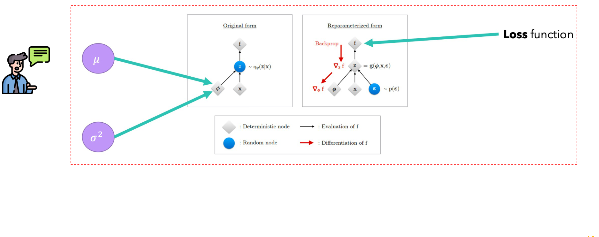
In practice, the VAE encoder outputs $\mu$ and $\log(\sigma^2)$ instead of $\sigma^2$ directly. Predicting $\log(\sigma^2)$ allows the network output to take any real value (positive or negative) without forcing non-negativity constraints, and we recover $\sigma = \exp(\tfrac{1}{2}\log(\sigma^2))$.
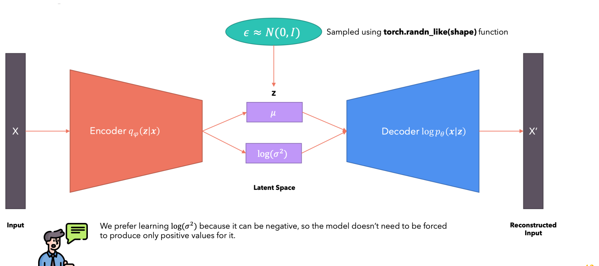
4. Stable Diffusion: Clearly Explained
4.1 High-Level Model Components
At inference time, Stable Diffusion is built from three tightly coordinated modules:
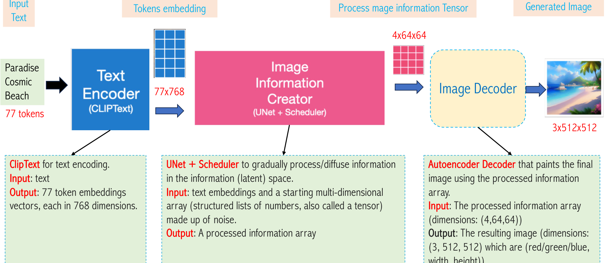
- Text Encoder (
CLIPText): Encodes the user’s prompt into $77$ token embedding vectors of $768$ dimensions each. - Image Information Creator (
U-Net + Scheduler): Operates entirely in latent space. Starting from pure Gaussian noise of shape $(4, 64, 64)$, it iteratively denoises the latent tensor over $N$ scheduler steps (commonly $50$ steps) conditioned on the text embeddings. - Image Decoder (
Autoencoder Decoder): Runs once after the final denoising step to paint the processed $(4, 64, 64)$ latent tensor back into a full-resolution $(3, 512, 512)$ RGB image.
If we decode the intermediate latent tensors at steps $1, 2, 4, 5, 10, 30,$ and $50$, we can visually watch a coherent scene gradually emerge out of pure static noise:
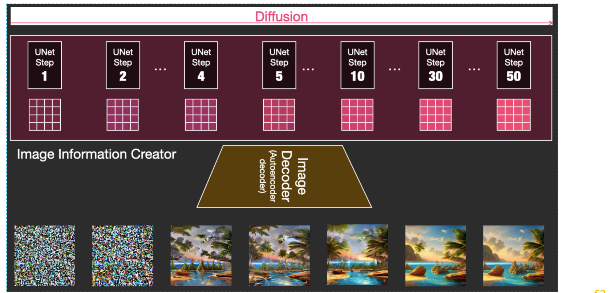
4.2 Training the Noise Predictor and Latent Speed Boost
How does the U-Net learn to remove noise? During training, we create supervised noise-prediction pairs from clean training images:
- Pick a clean training sample and a random noise level (timestep $t$).
- Sample random Gaussian noise $\epsilon$ and add it to the image according to timestep $t$.
- Feed the noisy sample and timestep $t$ into the U-Net Noise Predictor to predict the added noise $\hat{\epsilon}$.
- Compare the predicted noise against the actual ground-truth noise $\epsilon$ and update the U-Net weights via backpropagation.
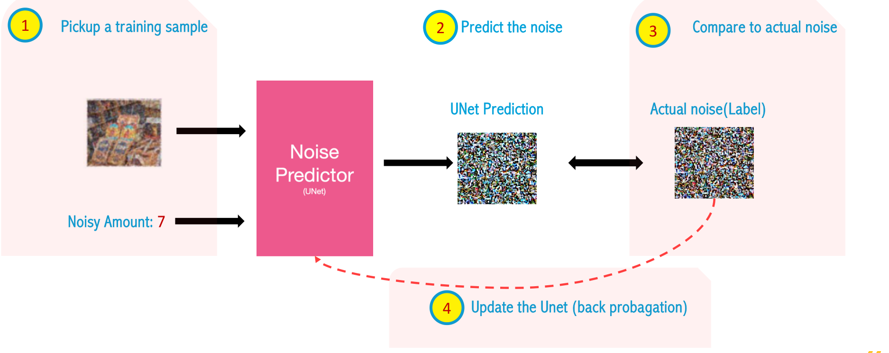
Because Stable Diffusion compresses each input image into a latent tensor using the pretrained VAE Encoder before adding noise, both the forward noising process and the multi-step reverse U-Net denoising process run on compact $(4, 64, 64)$ tensors instead of $(3, 512, 512)$ pixel arrays, yielding a massive speed and memory boost.
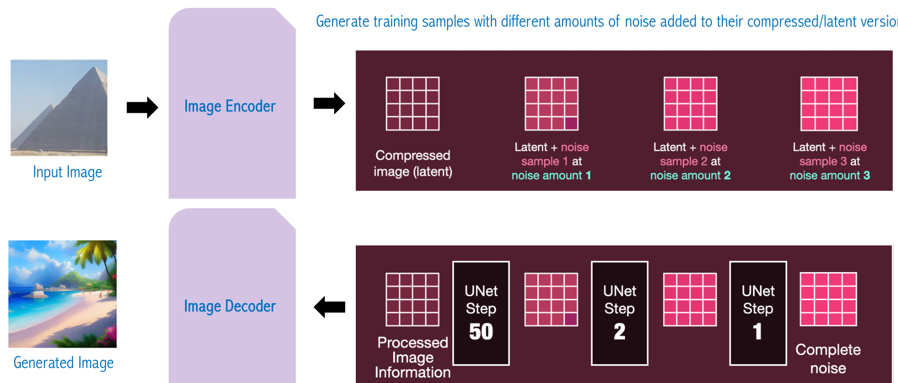
4.3 Full LDM Architecture and Cross-Attention
Putting perceptual compression ($\mathcal{E}$ and $\mathcal{D}$), latent diffusion ($z_0 \leftrightarrow z_T$), the denoising U-Net ($\epsilon_\theta$), and semantic conditioning ($\tau_\theta$) together gives the full Latent Diffusion Model diagram from Rombach et al.:
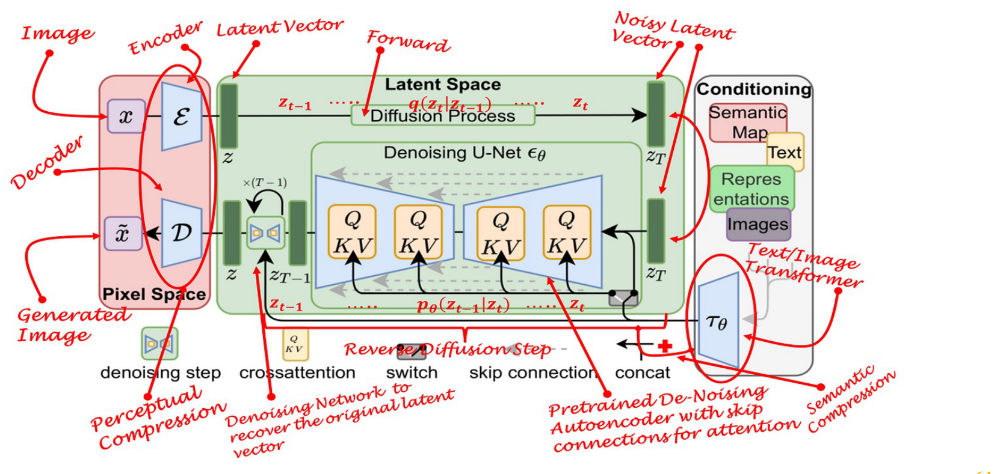
To let external conditioning $y$ (text prompts, semantic maps, or reference images) steer the spatial features inside the U-Net, LDM uses Cross-Attention layers inside the U-Net blocks. Here, the Query comes from the intermediate U-Net visual feature map $\varphi_i(z_t)$, while the Key and Value come from the conditioning encoder $\tau_\theta(y)$:
where $\varphi_i(z_t) \in \mathbb{R}^{N \times d_\epsilon^i}$ is the flattened intermediate latent representation in the U-Net, $\tau_\theta(y) \in \mathbb{R}^{M \times d_\tau}$ is the conditioning embedding sequence, and $W_Q^{(i)}, W_K^{(i)}, W_V^{(i)}$ are learnable projection matrices.
4.4 CLIP Training and Text Conditioning in U-Net
Early Stable Diffusion releases plug directly into OpenAI’s pretrained CLIPText model. CLIP is trained contrastively on hundreds of millions of image-caption pairs: given a batch of images and captions, an Image Encoder and Text Encoder produce embeddings, compare pairwise similarities, and update both encoders so matching image-caption pairs score close to $1$ while mismatched pairs score close to $0$.
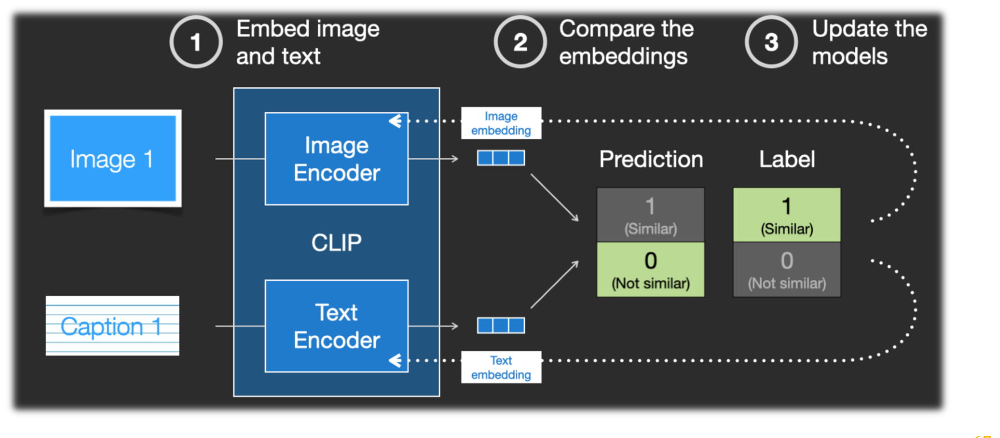
Inside an unconditional U-Net Noise Predictor, ResNet blocks only receive the noisy latent tensor and the noise-level (timestep) embedding. To build a text-conditioned U-Net, Stable Diffusion interleaves Attention (Cross-Attention) layers between the ResNet blocks, feeding the CLIP text embeddings directly into every attention layer so visual features continuously attend to prompt words.
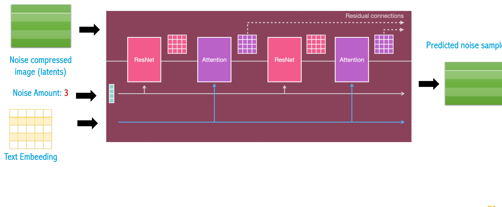
4.5 The Latent Diffusion Loss Function
Comparing the standard pixel-space diffusion loss ($L_{DM}$) with the unconditional and conditional Latent Diffusion losses ($L_{LDM}$) highlights how cleanly the objective transfers to latent space:
During training, both the denoising U-Net $\epsilon_\theta$ and (optionally) the domain-specific conditioning encoder $\tau_\theta(y)$ are optimized jointly by minimizing the mean squared error between the true Gaussian noise $\epsilon$ and the predicted noise $\epsilon_\theta(z_t, t, \tau_\theta(y))$.
4.6 Inference Pipeline and Component Code
Putting all three components together during inference follows a clean loop: sample a random $64 \times 64$ Gaussian latent seed, encode the prompt with the frozen CLIP Text Encoder into $77 \times 768$ embeddings, run the text-conditioned U-Net and Scheduler for $N$ denoising steps, and decode the final latent tensor into a $512 \times 512$ image with the VAE Decoder.
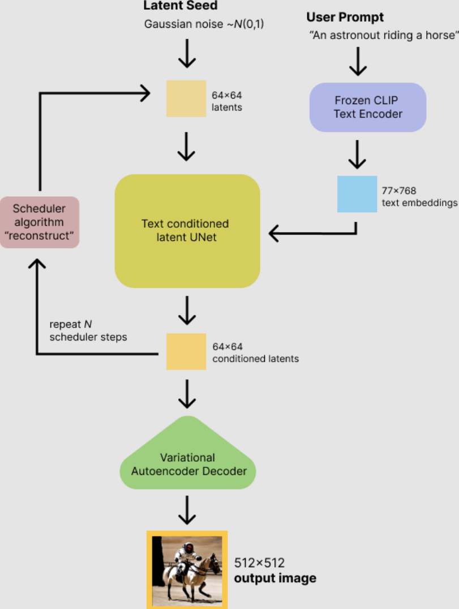
Using Hugging Face diffusers and transformers, we can inspect and run each of the three pretrained components individually.
1. VAE Encoder (Image Space to Latent Space)
The VAE encoder compresses a $512 \times 512 \times 3$ image into a $(1, 4, 64, 64)$ latent tensor (scaled to $[-1, 1]$ on input and multiplied by the empirical scaling factor 0.18215 to normalize latent variance):
import torch
from torchvision import transforms as tfms
from diffusers import AutoencoderKL
torch_device = "cuda" if torch.cuda.is_available() else "cpu"
# Load the pretrained autoencoder used to map between pixel and latent space
vae = AutoencoderKL.from_pretrained("CompVis/stable-diffusion-v1-4", subfolder="vae")
vae = vae.to(torch_device)
def pil_to_latent(input_im):
# Single image -> single latent in a batch of shape (1, 4, 64, 64)
with torch.no_grad():
image_tensor = tfms.ToTensor()(input_im).unsqueeze(0).to(torch_device) * 2 - 1
latent = vae.encode(image_tensor)
return 0.18215 * latent.latent_dist.sample()
2. Conditional U-Net (Noise Prediction)
The conditional U-Net accepts noisy latents, the current diffusion timestep t, and the prompt embeddings via encoder_hidden_states:
from diffusers import UNet2DConditionModel
# Load the U-Net model for predicting noise in latent space
unet = UNet2DConditionModel.from_pretrained(
"CompVis/stable-diffusion-v1-4", subfolder="unet"
)
unet = unet.to(torch_device)
noise_pred = unet(latents, t, encoder_hidden_states=text_embeddings)["sample"]
3. CLIP Text Encoder (Prompt to Token Embeddings)
The CLIP tokenizer pads or truncates every prompt to max_length = 77 tokens, and CLIPTextModel maps those token IDs to a $(1, 77, 768)$ embedding tensor:
from transformers import CLIPTextModel, CLIPTokenizer
tokenizer = CLIPTokenizer.from_pretrained("openai/clip-vit-large-patch14")
text_encoder = CLIPTextModel.from_pretrained("openai/clip-vit-large-patch14")
text_encoder = text_encoder.to(torch_device)
prompt = "An astronaut riding a horse"
text_input = tokenizer(
prompt,
padding="max_length",
max_length=tokenizer.model_max_length,
truncation=True,
return_tensors="pt",
)
input_ids = text_input.input_ids.to(torch_device)
with torch.no_grad():
output_embeddings = text_encoder(input_ids)[0]
print("Shape:", output_embeddings.shape) # torch.Size([1, 77, 768])
4.7 Text-to-Image, Image-to-Image, and In-Painting
A remarkable strength of this latent diffusion architecture is that the exact same pretrained components support multiple generative tasks simply by changing how the initial latent tensor $Z$ is constructed:
- Text-to-Image: Start from pure random noise $Z$ and denoise for all $T$ steps guided by the CLIP prompt embeddings.
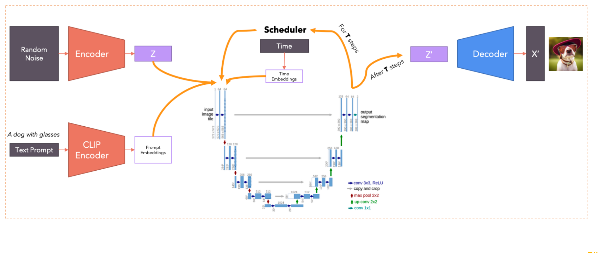
- Image-to-Image: Encode an existing input image into latent $Z$, add a controlled amount of noise (strength), and run the reverse U-Net denoising guided by a new prompt so the output preserves the original layout while adopting the requested style or edits.
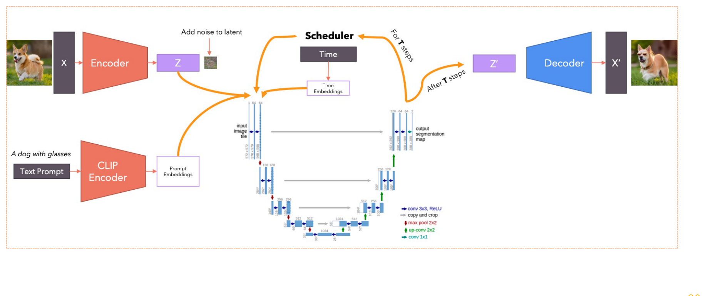
- In-Painting: Encode the masked image into latent space and combine the known unmasked latent region with the noisy latent inside the mask at each denoising step, seamlessly regenerating only the masked region according to the prompt.
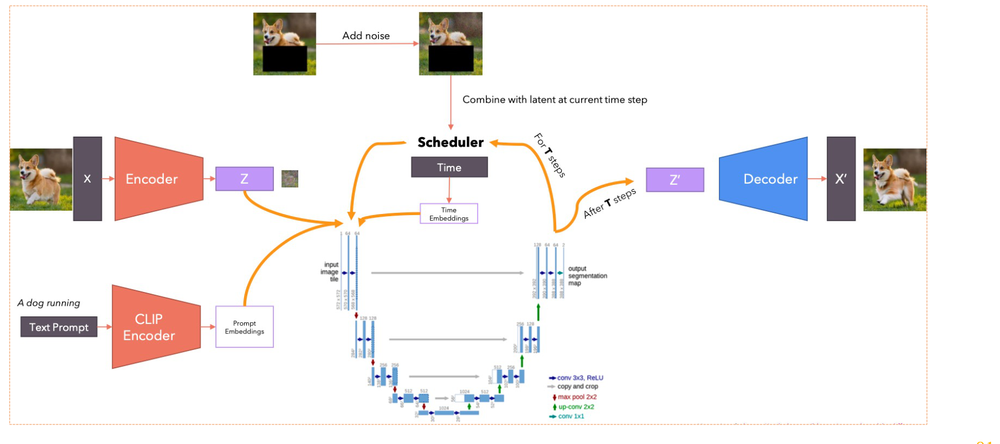
5. Stable Diffusion Demo with API and PyTorch Modules
5.1 Generating Images with the Diffusers API
In practice, Hugging Face’s StableDiffusionPipeline wraps the tokenizer, CLIP text encoder, U-Net, scheduler, and VAE decoder into a few lines of Python. Swapping in DPMSolverMultistepScheduler (DPM-Solver++) produces sharp results quickly, while passing a fixed torch.Generator seed makes generation reproducible and negative_prompt steers the model away from unwanted objects (using Classifier-Free Guidance):
import torch
from diffusers import StableDiffusionPipeline, DPMSolverMultistepScheduler
model_id = "stabilityai/stable-diffusion-2-1"
pipe = StableDiffusionPipeline.from_pretrained(model_id, torch_dtype=torch.float16)
pipe.scheduler = DPMSolverMultistepScheduler.from_config(pipe.scheduler.config)
pipe = pipe.to("cuda")
# 1. Basic prompt
prompt = "a photo of a white cat"
image = pipe(prompt, height=512, width=512).images[0]
# 2. Style prompt
style_prompt = "a lovely cat running in the desert in Van Gogh style, trending art."
van_gogh_cat = pipe(style_prompt).images[0]
# 3. Reproducible seed + negative prompt
generator = torch.Generator("cuda").manual_seed(1024)
sleeping_cat = pipe(
"a sleeping cat enjoying the sunshine.",
generator=generator,
negative_prompt="tree and leaves",
).images[0]
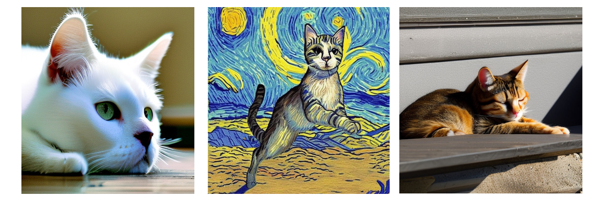
StableDiffusionPipeline: basic prompt (left), Van Gogh style transfer (center), and negative prompting with a fixed seed (right).5.2 Core PyTorch Building Blocks Behind Stable Diffusion
Looking under the hood of a from-scratch PyTorch implementation (adapted from Umar Jamil’s Stable Diffusion codebase), each major diagram block maps cleanly onto concise PyTorch modules:
VAE Encoder Downsampling Stack
The VAE encoder progressively downsamples the $512 \times 512$ input image by a factor of $8$ down to $64 \times 64$ using strided convolutions and residual blocks:
import torch
import torch.nn as nn
class VAE_Encoder(nn.Sequential):
def __init__(self):
super().__init__(
# (Batch_Size, 3, H, W) -> (Batch_Size, 128, H, W)
nn.Conv2d(3, 128, kernel_size=3, padding=1),
VAE_ResidualBlock(128, 128),
VAE_ResidualBlock(128, 128),
# (Batch_Size, 128, H, W) -> (Batch_Size, 128, H / 2, W / 2)
nn.Conv2d(128, 128, kernel_size=3, stride=2, padding=0),
VAE_ResidualBlock(128, 256),
VAE_ResidualBlock(256, 256),
# Further downsampling to H / 8, W / 8 followed by attention & latent projection
)
Multi-Head Self-Attention Module
Used inside both the VAE bottleneck and the U-Net spatial attention blocks, SelfAttention packs $W_Q$, $W_K$, and $W_V$ into a single linear projection in_proj:
class SelfAttention(nn.Module):
def __init__(self, n_heads, d_embed, in_proj_bias=True, out_proj_bias=True):
super().__init__()
# Combines W_q, W_k, and W_v into one projection matrix
self.in_proj = nn.Linear(d_embed, 3 * d_embed, bias=in_proj_bias)
# Output projection W_o
self.out_proj = nn.Linear(d_embed, d_embed, bias=out_proj_bias)
self.n_heads = n_heads
self.d_head = d_embed // n_heads
def forward(self, x, causal_mask=False):
# x: (Batch_Size, Seq_Len, Dim)
batch_size, sequence_length, d_embed = x.shape
interim_shape = (batch_size, sequence_length, self.n_heads, self.d_head)
q, k, v = self.in_proj(x).chunk(3, dim=-1)
q = q.view(interim_shape).transpose(1, 2)
k = k.view(interim_shape).transpose(1, 2)
v = v.view(interim_shape).transpose(1, 2)
# Scaled dot-product attention with optional causal mask
weight = q @ k.transpose(-1, -2) / (self.d_head ** 0.5)
if causal_mask:
mask = torch.ones_like(weight, dtype=torch.bool).triu(1)
weight.masked_fill_(mask, -torch.inf)
weight = torch.softmax(weight, dim=-1)
output = (weight @ v).transpose(1, 2).reshape(batch_size, sequence_length, d_embed)
return self.out_proj(output)
U-Net Spatial Attention Block (Self-Attention + Cross-Attention + GeGLU)
Finally, each UNET_AttentionBlock applies GroupNorm, spatial Self-Attention over visual patches, Cross-Attention against the CLIP text context ($768$-dim), and a GeGLU feed-forward layer with residual skip connections:
class UNET_AttentionBlock(nn.Module):
def __init__(self, n_head: int, n_embd: int, d_context=768):
super().__init__()
channels = n_head * n_embd
self.groupnorm = nn.GroupNorm(32, channels, eps=1e-6)
self.conv_input = nn.Conv2d(channels, channels, kernel_size=1, padding=0)
self.layernorm_1 = nn.LayerNorm(channels)
self.attention_1 = SelfAttention(n_head, channels, in_proj_bias=False)
self.layernorm_2 = nn.LayerNorm(channels)
self.attention_2 = CrossAttention(n_head, channels, d_context, in_proj_bias=False)
self.layernorm_3 = nn.LayerNorm(channels)
self.linear_geglu_1 = nn.Linear(channels, 4 * channels * 2)
self.linear_geglu_2 = nn.Linear(4 * channels, channels)
self.conv_output = nn.Conv2d(channels, channels, kernel_size=1, padding=0)
6. Summary and References
To summarize the key ideas behind Stable Diffusion:
- Diffusion principle: Gradually corrupt training data with Gaussian noise in the forward pass, and train a neural network to predict and reverse that noise step by step.
- Latent space efficiency: Compressing $512 \times 512 \times 3$ images into $64 \times 64 \times 4$ latent tensors via a VAE dramatically reduces training and inference cost while preserving perceptual fidelity.
- Contextual text understanding: A frozen pretrained CLIP text encoder translates prompts into semantically structured $77 \times 768$ token embeddings.
- Cross-attention guidance: Injecting text embeddings into the U-Net’s cross-attention layers binds visual generation tightly to user prompts across text-to-image, image-to-image, and in-painting tasks.
References
- Robin Rombach, Andreas Blattmann, Dominik Lorenz, Patrick Esser, and Björn Ommer, High-Resolution Image Synthesis with Latent Diffusion Models (CVPR 2022).
- Jonathan Ho, Ajay Jain, and Pieter Abbeel, Denoising Diffusion Probabilistic Models (NeurIPS 2020).
- Diederik P. Kingma and Max Welling, Auto-Encoding Variational Bayes (ICLR 2014).
- Alec Radford et al., Learning Transferable Visual Models From Natural Language Supervision (CLIP) (ICML 2021).
- Jay Alammar, The Illustrated Stable Diffusion (2022).
- Umar Jamil, PyTorch Stable Diffusion & VAE From Scratch Notes.
- Vinh Dinh Nguyen (AI VIETNAM All-in-One Course), Stable Diffusion: Clearly Explained lecture slides.